Profesora. Adriana Cruz Priego
Ayudante. Jonathan Peña Almonte
Ana Belen Sanvicente Méndez
Instrucciones: Resuelva los siguientes ejercicios, si es necesario que haga ciertas suposiciones debe establecerlas desde el principio. Recuerde que en los ejercicios no sólo se solicita el cálculo, sino que debe hacer la interpretación de los resultados en función de la variable caracterizada en cada caso y entre ellos. 1. Se llevaron a cabo mediciones de la edad ósea en población pediátrica de la Ciudad de Querétaro por dos diferentes médicos pediatras expertos en el seguimiento de la maduración esquelética en dos diferentes tipos de imágenes: RX y DXA. (Valor 5 puntos) Suposiciones y teoría previa para los cálculos:
Tenemos muestras de una población de niños y niñas de tamaño n = 216. Para la realización de los cálculos primero se especifica que los datos se toman como si tuvieran una distribución normal. El Teorema de Límite Central estipula que para muestras grandes con una distribución no normal se puede tomar como normal. Las muestras no dicen la información de las edades óseas de los niños y niñas. La edad ósea es un parámetro que nos dice la maduración de los huesos de un niño [1] o joven y a menudo se compara con la edad cronológica porque no son iguales en ocasiones. Los estudios de imagen que se realizaron en este caso fueron RX y DXA. Los rayos X son radiación electromagnética de alta energía (ionizante) que en este caso nos sirve para captar el contraste de los huesos [2]. Mientras que la técnica de radioabsorciometría de doble energía (DXA) consiste en emitir dos tipos de rayos X y, de acuerdo a la absorción de rayos, estudiar la densidad ósea del paciente [3]. Dichos estudios nos sirven para evaluar la salud ósea de un paciente. La media y la varianza de las edades cronológicas son:
Dato Edad cronológica Intervalo de confianza 95%
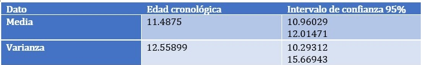La media y la varianza de las edades cronológicas en intervalos son:
(De 5 a 9 años) 112 datos:
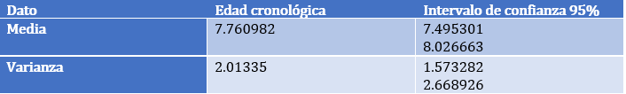(De 10 a 17 años) 104 datos:
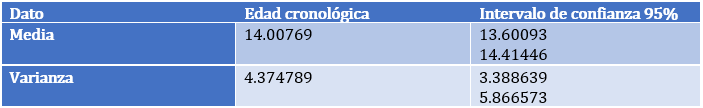• Calcule los dos intervalos de confianza para la media de las mediciones de cada observador para cada técnica de imagen. Comparé y discuta que es lo que observa. Para el cálculo de los intervalos se realizó un programa en RStudio, el cual viene adjunto en la tarea. Se realizó de este modo para aprovechar toda la cantidad de datos y tener un error más pequeño. De igual modo, porque las tablas existentes por practicidad no tienen hasta tal grado de libertad. Primero se instalaron las paqueterías readr, fdth, DescTools, readxl y EnvStats y se subió la tabla de Excel de los datos_EO. En mi caso, mir archivos son EO que contiene las medidas de los dos evaluadores para RX y DXA. Y otros dos archivos para los intervalos que se piden a en el segundo punto llamados EO59 y EO1017. Luego se pasaron los datos de cada columna al tipo de arreglos. Obtuvimos las varianzas y las medias para cada evaluador y cada técnica de imagen, dando lo siguiente:
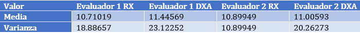
Estos valores no son muy confiables a la hora de analizara los datos entonces necesitamos los intervalos de confianza. Para el IC de la media usamos la función t.test() con con p-value < 2.2e-16. Quedando como resultado lo siguiente:
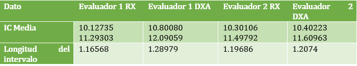
El tamaño de los intervalos sobrepasa y es cercano a 1. Son más grandes los de DXA que los de RX. Estos intervalos nos dicen la probabilidad del 95 % de tener a la media muestral en ese intervalo. • Divida los datos en 2 intervalos de edad: de 5 a 9 años y de 10 a 17 años. Calculé los intervalos de confianza para la media de dichas observaciones. ¿Qué observa?
Para 5 a 9 años:
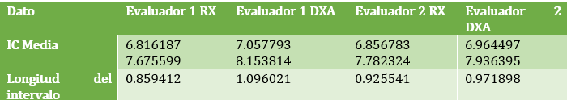El tamaño de las longitudes es pequeño, no pasan de 1 la mayoría. Además, son más grandes en el caso de DXA que de RX.
Para 10 a 17 años:
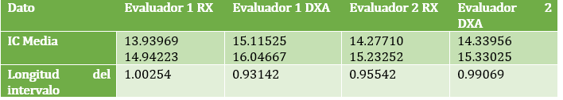El tamaño de las longitudes es menor que 1 y cercano a 1 aproximadamente. Además, son más grandes en el caso de DXA que de RX.
• Ahora calculé los intervalos de confianza para la diferencia de medias de las mediciones entre ambos observadores para cada técnica de imagen. Discuta sus hallazgos. En este caso para la media, podemos restar elemento a elemento el arreglo de RX1 menos el de RX2 y lo mismo con DXA, y esto sacarle el intervalo de confianza (ya que la diferencia de medias es igual a la media de las diferencias). O bien, con la función with(data, t.test(x,y,paired=TRUE)).
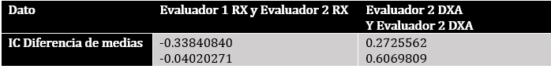El 0 no está en el intervalo de ninguna por lo que se puede considerar que sí hay diferencia entre las medias. Está más adentro el 0 el de RX que el de DXA.
• Si sus intervalos de confianza son grandes proponga un tamaño de muestra teórico para hacerlos más estrechos y viceversa. ¿Qué diría de la muestra total que le fue proporcionada? Proponiendo un tamaño de muestra 100, cuyos datos son escogidos al azar, tenemos que:
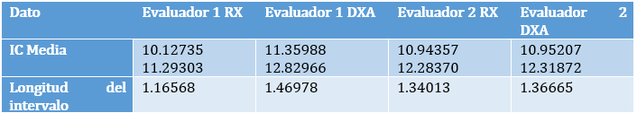Vemos que si tomamos menos personas el intervalo se vuelve ligeramente más grande. Como el tamaño de los intervalos no cambia significativamente la muestra de 100 es representativa. Sin embargo, no podríamos tener tanta certeza al diagnosticar de anomalías no severas de la edad ósea de la muestra total. Si en cambio, proponemos una muestra de 30 datos a azar obtenemos:
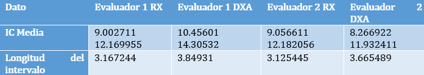La longitud del intervalo se hace demasiado grande si nos reducimos a 30 y es una muestra sesgada no elegible para sacar conclusiones certeras. 2. Se llevaron a cabo mediciones de la edad ósea en población pediátrica de la Ciudad de Querétaro por dos diferentes médicos pediatras expertos en el seguimiento de la maduración esquelética en dos diferentes tipos de imágenes: RX y DXA. (Valor 5 puntos) • Calculé los dos intervalos de confianza para la varianza de las mediciones de cada observador para cada técnica de imagen. Comparé y discuta que es lo que observa. Para el IC de la varianza usamos la función varTest().
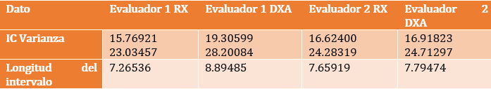• Divida los datos en 2 intervalos de edad: de 5 a 9 años y de 10 a 17 años. Calculé los intervalos de confianza para la varianza de dichas observaciones. ¿Qué observa? Para 5 a 9 años:
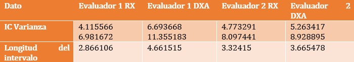Para 10 a 17 años:
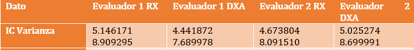• Ahora calculé los intervalos de confianza para el cociente de las varianzas de las mediciones entre ambos observadores para cada técnica de imagen. Discuta sus hallazgos. Para esto, se usó la función with(data, var.test(x,y,paired)).
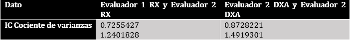En este intervalo se encuentra el 1 por lo que se puede decir que las varianzas son iguales para los dos evaluadores en la respectiva técnica de imagen. • Comparé y discuta todos sus hallazgos en relación con lo observado en los cálculos del ejercicio. El hecho de que los intervalos en RX sean más pequeños que los de DXA nos puede decir que los de DXA son más “diversos” como es en la realidad e incluso puede revelarnos más información que el RX. También pudimos observar que la varianza se redujo cuando dividimos los intervalos, y la edad cronológica es un factor que sí se debería considerar a la hora de evaluar los datos. Si bien el intervalo de la diferencia de medias no incluyó a cero (pero sí cercano) en ninguno de los casos, el intervalo del cociente de varianzas dio 1. Por lo tanto, sí podemos sacar conclusiones a partir de los datos En el caso de nuestra muestra, el intervalo de edad cronológica coincide con el de la edad ósea aproximadamente, es decir no difieren de la edad cronológica de 1 o más años lo cual es indicativo de la salud [4] y podemos concluir que la muestra de esta población no presenta alguna anomalía ósea del crecimiento en promedio. Si bien hay casos en los que sí difiere por más de un año, no es una constante en toda la muestra.